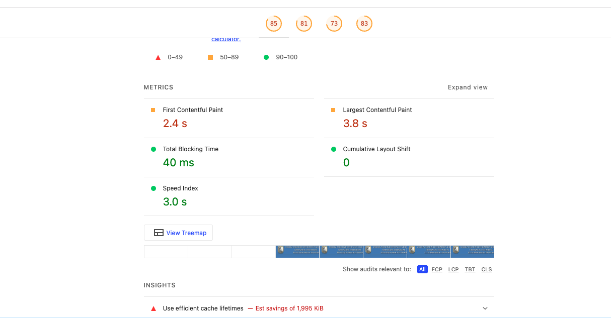
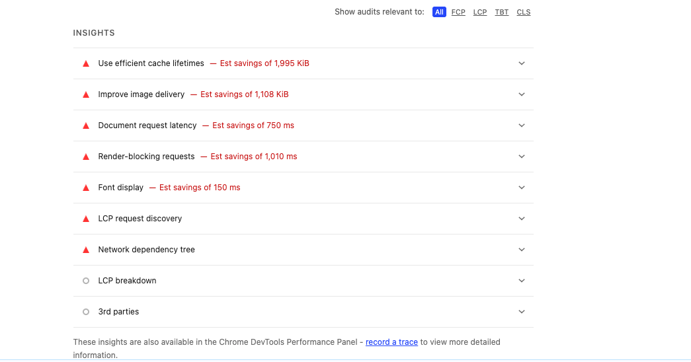
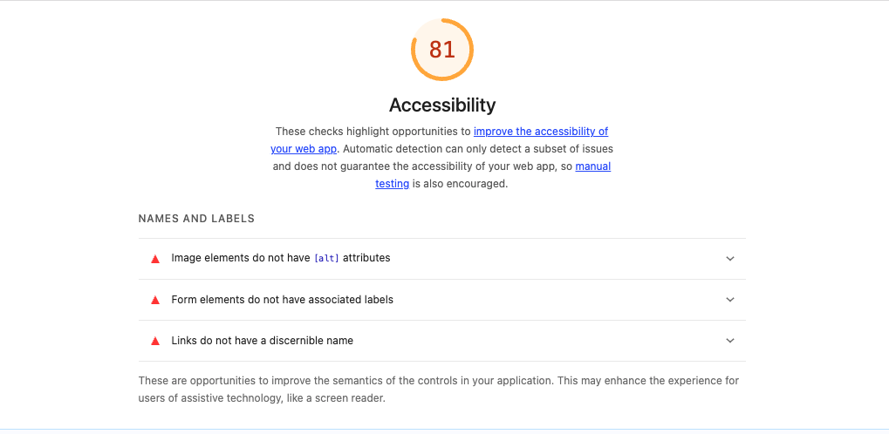
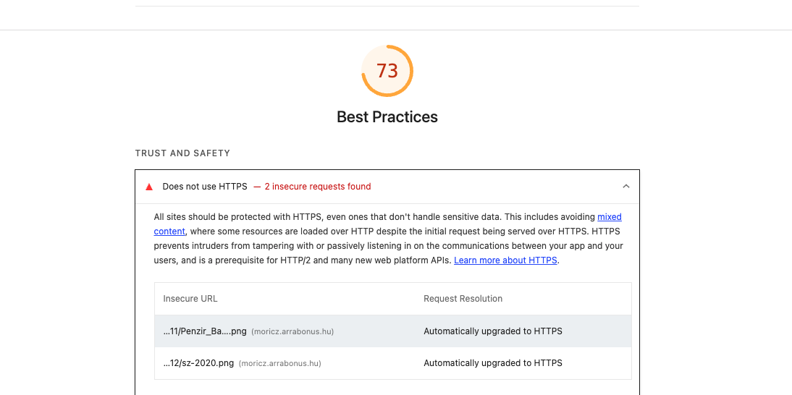
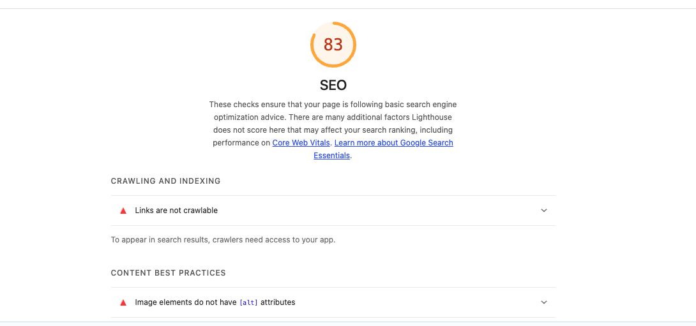

Reszponzív ellenőrzés és Lighthouse-audit
Kézzel ellenőrizzük a közlekedési oldal három nézetét, majd a Chrome Lighthouse jelentésével feltárjuk a teljesítményi, akadálymentességi és SEO-problémákat.
Az óra célja
- A reszponzív oldal kézi ellenőrzése több szélességen.
- Lighthouse-jelentés készítése Chrome DevToolsban.
- A négy fő kategória értelmezése.
- A jelentés hibáinak és javaslatainak megvizsgálása.
- Két egyszerű HTML-javítás elvégzése.
- A későbbi meta- és képoptimalizálási feladatok azonosítása.
1. Először kézi ellenőrzés
Az automatizált eszköz nem helyettesíti azt, hogy saját szemmel végignézzük az oldalt.
- Nyisd meg a kezdőprojektet Live Serverrel.
- Vizsgáld meg 1400, 1200, 944, 700, 544, 430 és 360 px szélességen.
- Ellenőrizd, hogy nincs vízszintes görgetés.
- Próbáld ki a navigáció hivatkozásait.
- Nézd meg, olvasható-e a táblázat és nem fed-e rá a gomb a címre.
- Szűkítsd lassan az ablakot a megadott értékek között is.
2. Mi a Lighthouse?
A Lighthouse a Chrome-ba épített automatizált auditáló eszköz. Megvizsgálja a weboldalt, jelentést készít, és megmutatja a lehetséges javítási területeket.
3. Lighthouse-jelentés készítése
- Nyisd meg az oldalt Google Chrome-ban Live Serverrel.
- Nyisd meg a DevTools ablakot.
- Válaszd a Lighthouse panelt; ha nem látszik, keresd a további panelek között.
- Válaszd a Navigation módot.
- Először válaszd a Desktop, majd külön futtatásban a Mobile eszközt.
- Hagyd bekapcsolva a négy fő kategóriát.
- Kattints az Analyze page load gombra.
4. A négy fő kategória
| Kategória | Mit vizsgál? | Példa a projektünkből |
|---|---|---|
| Performance | Betöltési sebesség és megjelenítés | A nagyméretű közlekedési kép |
| Accessibility | Hozzáférhetőség és olvashatóság | Alternatív szöveg, színkontraszt, szerkezet |
| Best Practices | Általános webes bevált gyakorlatok | Biztonságos és helyes HTML-használat |
| SEO | Alapvető keresőbarát beállítások | Cím, viewport és a még hiányzó meta description |
5. Amit már jól csináltunk
- A dokumentum nyelve meg van adva:
<html lang="hu">. - Van értelmes
<title>elem. - Szerepel a viewport metaelem.
- A képhez tartozik leíró
altszöveg. - A felsorolások valódi listaelemekből állnak.
- Az oldal szemantikus elemeket használ: header, nav, main/article, aside és footer.
6. Két most elvégezhető javítás
A kép méretének megadása
<img
class="post-img"
src="img/varosi-kozlekedes.png"
alt="Villamos, elektromos busz, kerékpárosok és gyalogosok egy városi úton"
width="1939"
height="811">A böngésző így már betöltés előtt lefoglalhatja a kép helyét. A CSS-ben lévő width: 100% és height: auto továbbra is reszponzívan jeleníti meg.
A gomb típusának megadása
<button class="like-button" type="button">💚 Hasznos</button>A type="button" egyértelművé teszi, hogy ez nem űrlapot elküldő gomb.
7. Amit most még nem javítunk
- Hiányzó meta description: a következő SEO-órán készítjük el.
- Nagyméretű PNG: a képoptimalizálási órán méretezzük át és alakítjuk korszerű formátumra.
- Helyi teljesítményeredmény: a közzétett oldalon újra megmérjük.
- Pontszámok eltérése: nem próbálunk mindenáron 100 pontot elérni; az indokolt hibákat javítjuk.
8. Valós példa – az iskolai honlap Lighthouse-jelentése

| Terület | Pont | Mit látunk? |
|---|---|---|
| Performance | 85 | Jó eredmény, de a képek, a gyorsítótárazás és a kezdeti betöltés fejleszthető. |
| Accessibility | 81 | A jelentés több szemantikai és olvashatósági problémát talált. |
| Best Practices | 73 | Ez a legalacsonyabb pontszám; biztonsági és böngészőkonzolban megjelenő jelzések is vannak. |
| SEO | 83 | Technikai keresőoptimalizálási hiányosságok láthatók. |
A betöltés stabil, de nem minden jelenik meg gyorsan
First Contentful Paint: 2,4 s– az első tartalom megjelenése még javítható.Largest Contentful Paint: 3,8 s– a legnagyobb látható tartalom viszonylag későn jelenik meg.Total Blocking Time: 40 ms– kevés blokkolás, ez jó eredmény.Cumulative Layout Shift: 0– betöltés közben nem ugrál az elrendezés.
Érdekes következtetés: egy oldal lehet stabil és gyorsan használható úgy is, hogy a legnagyobb tartalmi elem még lassan töltődik be.
A teljesítményre ható jelzések

- A gyorsítótár beállításainál közel 2 MB becsült megtakarítás jelenik meg.
- A képek hatékonyabb kiszolgálásával több mint 1 MB takarítható meg.
- A dokumentumkérés és a renderelést blokkoló fájlok késleltetik a megjelenést.
- A cache-beállítás gyakran szerveroldali feladat, tehát nem minden jelzés oldható meg pusztán a HTML átírásával.
Egy hiba több kategóriában is megjelenhet

A hiányzó képleírás egyszerre ronthatja az Accessibility és a SEO eredményét. A címke nélküli űrlapelem, a felismerhető név nélküli link és a gyenge színkontraszt elsősorban a felhasználók számára okozhat nehézséget. A jelentés azt is jelzi, hogy az automatikus vizsgálat csak a problémák egy részét képes felismerni.
#112a46 és a #acc8e5 színpárt hasonlítjuk össze.Coolors Contrast Checker megnyitása
A legalacsonyabb pontszám: Best Practices

Két kép HTTP-címmel szerepel, amelyeket a böngésző automatikusan HTTPS-re frissített. Ez jó példa arra, hogy a böngésző képes elfedni egy forráskódban vagy beállításban maradt hibát, miközben az audit továbbra is jelzi azt. A jelentés ezenkívül konzol- és Issues-panelen megjelenő problémákat is talált.
A SEO-pontszám nem a Google-helyezést jelenti

A 83 pontos SEO-érték technikai alapellenőrzés. A képernyőképen nem bejárható linkek és alt nélküli képek szerepelnek. Ez a szám nem mondja meg, hogy az oldal hányadik helyen jelenik meg a Google találatai között.
9. Órai jegyzőkönyv
- Írd fel a Desktop audit négy pontszámát.
- Írd fel a Mobile audit négy pontszámát.
- Válassz ki kategóriánként egy jelzést.
- Írd le saját szavaiddal, mit jelent.
- Döntsd el: most javítható, későbbi óra témája, vagy ellenőrzést igénylő jelzés?
- Végezd el a kép méretattribútumainak és a gomb típusának javítását.
- Futtasd újra az auditot, és hasonlítsd össze az eredményt.
10. Ellenőrző kérdések
- Miért végzünk kézi ellenőrzést a Lighthouse előtt?
- Melyik négy fő kategóriát vizsgáljuk?
- Miért lehet félrevezető a helyi teljesítménypontszám?
- Miért hasznos a képen a width és height attribútum?
- Miért nem kell minden Lighthouse-jelzést gondolkodás nélkül elfogadni?
Válaszok
- Mert az automatizált teszt nem lát minden vizuális és használhatósági problémát.
- Performance, Accessibility, Best Practices és SEO.
- Mert a fájlok a saját gépről, hálózati letöltés nélkül érkeznek.
- A böngésző előre lefoglalhatja a kép helyét, így kisebb az elrendezés elmozdulása.
- Mert a jelzés környezetfüggő vagy téves is lehet; előbb meg kell vizsgálni az okát.
Mit vigyél el ebből az órából?
- A reszponzív tesztelés kézi és automatizált ellenőrzésből áll.
- A Lighthouse problémákat és fejlesztési lehetőségeket jelez.
- A pontszám önmagában nem cél; a jelentés okait kell megérteni.
- A helyi és a közzétett oldal eredménye eltérhet.
- A következő lépés a metaelemek és a SEO-alapok rendezése.